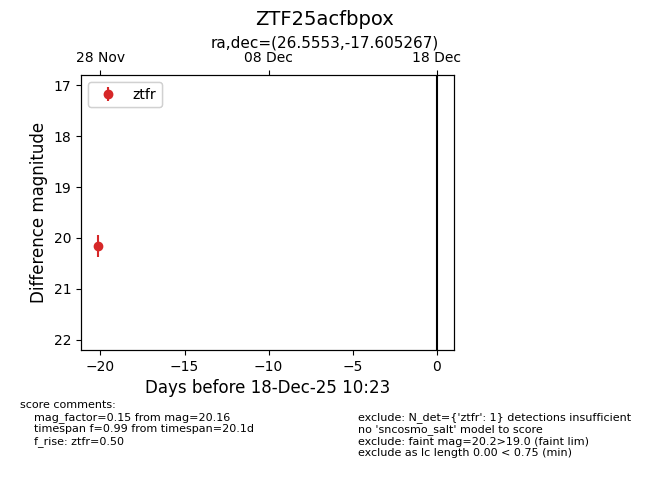
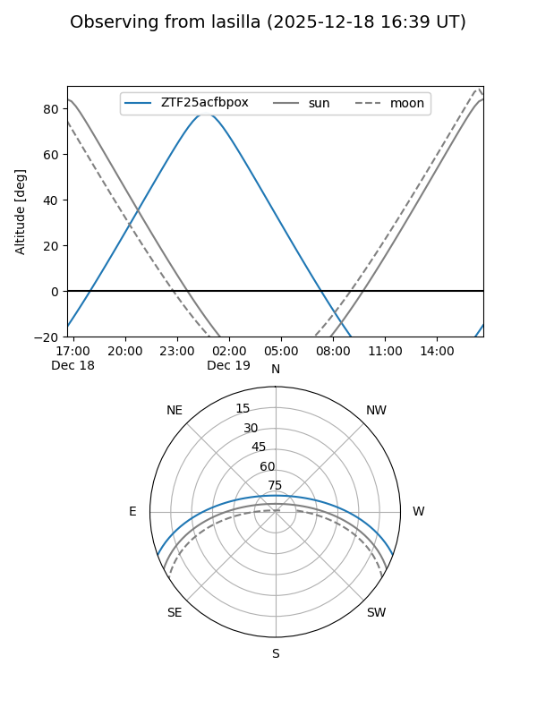
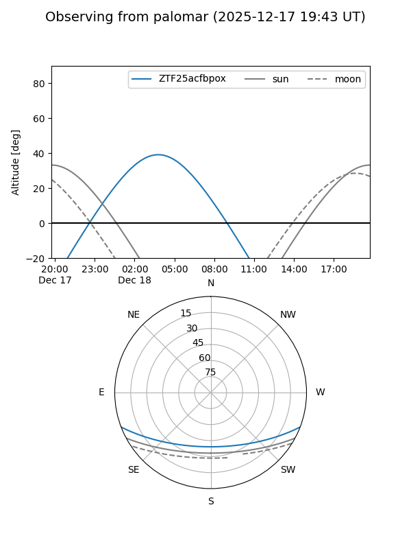

ZTF25acfbpox
Target ZTF25acfbpox at 2025-12-18 11:17
Aliases and brokers:
FINK: fink-portal.org/ZTF25acfbpox
Lasair: lasair-ztf.lsst.ac.uk/objects/ZTF25acfbpox
ALeRCE: alerce.online/object/ZTF25acfbpox
alt names
ZTF25acfbpox (ztf,fink_ztf)
Coordinates:
equatorial (ra, dec) = 26.5553,-17.60527
equatorial (HMS+DMS) = 01:46:13.26,-17:36:18.96
galactic (l, b) = (178.7814,-74.17501)
Photometry
last ztfr=20.16
1 ztfr detections
Lightcurve

Visibility


Additional plots